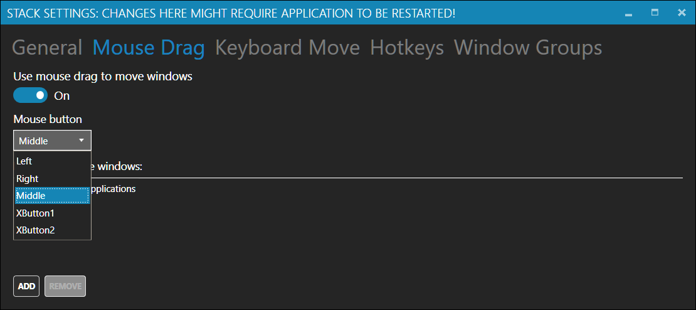

The Free Release (v1.1)
See also
what's new in the latest professional version
Contents:
Keyboard hotkey improvements
Moving windows with keyboard
We backported the new improved version of keyboard window movement algorithm from
the professional version of Stack.
It provides more natural directional movement, especially with multiple screens or tricky layouts.
New hotkeys
We added two new configurable hotkeys.
- Reload Layouts (default - Win+Ctrl+R) reloads current layouts from disk, enabling layout editing without restarting Stack
- Select Layout (default - Win+Ctrl+L) shows a new layout selection window with previews on the current screen, that spares the need to go to the tray menu
'Which mouse button to use' setting
You can now change which mouse button is used to drag windows between zones.

Better handling for broken layout files
In the preview versions of Stack, an attemp to load a broken layout would show a notification,
and load a blank layout with a single zone instead. In this version, we accumulate all the layout
issues, and display them as an overlay, which should help debugging custom layouts.
Bug Fixes and Minor Improvements
- multiscreen, multi-DPI configurations are now handled much better
- reworked UI for window group editing to be more prominent
- most settings now do not require app restart (in fact, none should)
- added an option to migrate settings to the advanced version
- full support for Windows Insider builds
- improved startup time
- simplified tray menu, added Help and Review links
- peform several operations in background
- improved stability
- updated all 3rd party components to their latest versions
Get the advanced edition of Stack V2.1 from Windows Store >
Get Stack - free edition v1.1 >